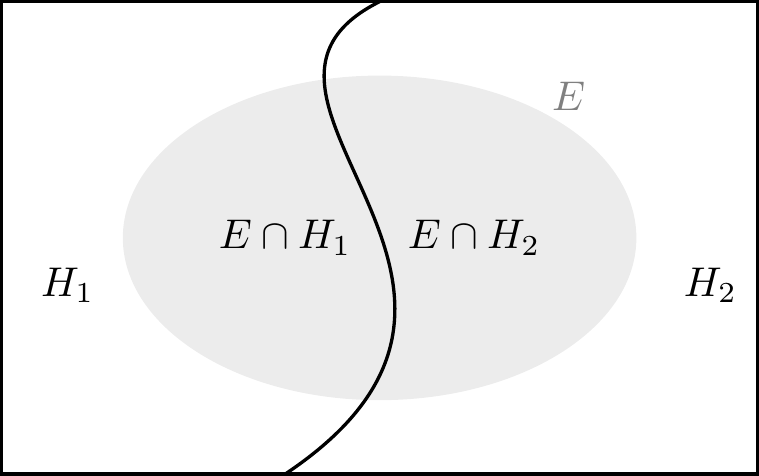

Chapter 9 Il teorema di Bayes
Il teorema di Bayes assume un ruolo fondamentale nell’interpretazione soggettivista della probabilità perché descrive l’aggiornamento della fiducia che si aveva nel verificarsi di una determinata ipotesi \(H\) (identificata con la probabilità assegnata all’ipotesi stessa) in conseguenza del verificarsi dell’evidenza \(E\).
9.1 Il teorema di Bayes
Theorem 9.1 Sia \((H_i)_{i\geq 1}\) una partizione dell’evento certo \(\Omega\) e sia \(E \subseteq \Omega\) un evento tale che \(p(E) > 0\), allora, per \(i = 1, \dots, \infty\):
\[\begin{equation} {\mbox{P}}(H_i \mid E) = \frac{{\mbox{P}}(E \mid H_i){\mbox{P}}(H_i)}{\sum_{j=1}^{\infty}{\mbox{P}}(H_j)P(E \mid H_j)}. \tag{9.1} \end{equation}\]
La formula di Bayes contiene tre concetti fondamentali. I primi due distinguono il grado di fiducia precedente al verificarsi dell’evidenza \(E\) da quello successivo al verificarsi dell’evidenza \(E\). Pertanto, dati gli eventi \(H, E \subseteq \Omega\)
- si definisce probabilità a priori la probabilità che viene attribuita al verificarsi dell’ipotesi \(H\) prima di sapere che si è verificato l’evento \(E\), tenendo conto delle caratteristiche cognitive del decisore (esperienza, modo di pensare, ecc.);
- si definisce probabilità a posteriori la probabilità assegnata ad \(H\) una volta che sia noto \(E\), ovvero l’aggiornamento della probabilità a priori alla luce della nuova evidenza \(E\).
- Il terzo concetto definisce la probabilità che ha l’evento \(E\) di verificarsi quando è vera l’ipotesi \(H\), ovvero la probabilità dell’evidenza in base all’ipotesi. Pertanto, dati gli eventi \(H, E \subseteq \Omega\) si definisce verosimiglianza di \(H\) dato \(E\) la probabilità condizionata che si verifichi \(E\), se è vera \(H\): \(P (E \mid H)\).
Si noti che, per il calcolo della quantità a denominatore, si ricorre al teorema della probabilità assoluta.
Exercise 9.1 Per fare un esempio, considerando una partizione dell’evento certo \(\Omega\) in due soli eventi che chiamiamo ipotesi \(H_1\) e \(H_2\). Supponiamo conosciute le probabilità a priori \(P(H_1)\) e \(P(H_2)\). Consideriamo un terzo evento \(E \subseteq \Omega\) con probabilità non nulla di cui si conosce la verosimiglianza, ovvero si conoscono le probabilità condizionate \({\mbox{P}}(E \mid H_1)\) e \(P(E \mid H_2)\). Supponendo che si sia verificato l’evento \(E\), vogliamo conoscere le probabilità a posteriori delle ipotesi, ovvero \(P(H_1 \mid E)\) e \(P(H_2 \mid E)\).

Per trovare le probabilità cercate scriviamo:
\[ \begin{split} P(H_1 \mid E) &= \frac{P(E \cap H_1)}{P(E)}\notag\\ &= \frac{P(E \mid H_1) P(H_1)}{P(E)}. \end{split} \]
Sapendo che \(E = (E \cap H_1) \cup (E \cap H_2)\) e che \(H_1\) e \(H_2\) sono eventi disgiunti, ovvero \(H_1 \cap H_2 = \emptyset\), ne segue che possiamo calcolare \({\mbox{P}}(E)\) utilizzando il teorema della probabilità assoluta:
\[ \begin{split} P(E) &= P(E \cap H_1) + P(E \cap H_2)\notag\\ &= P(E \mid H_1)P(H_1) + P(E \mid H_2)P(H_2). \end{split} \]
Sostituendo tale risultato nella formula precedente otteniamo:
\[\begin{equation} P(H_1 \mid E) = \frac{P(E \mid H_1)P(H_1)}{P(E \mid H_1)P(H_1) + P(E \mid H_2)P(H_2)}. \tag{9.2} \end{equation}\]
Un lettore attento si sarà reso conto che, in precedenza, abbiamo già applicato il teorema di Bayes quando abbiamo risolto l’esercizio riportato nella Sezione 8.1. In quel caso, le due ipotesi erano “malattia”, che possiamo denotare con \(M\), e “malattia assente”, \(M^\complement\). L’evidenza \(E\) è costituita dal risultato positivo al test, ovvero \(+\). Con questa nuova notazione la (9.2) diventa:
\[\begin{equation} P(M \mid +) = \frac{P(+ \mid M) P(M)}{P(+ \mid M) P(M) + P(+ \mid M^\complement) P(M^\complement)}\notag \end{equation}\]
Inserendo i dati nella formula, otteniamo
\[\begin{align} P(M \mid +) &= \frac{0.9 \cdot 0.01}{0.9 \cdot 0.01 + 0.1 \cdot 0.99} \notag\\ &= \frac{9}{108} \notag\\ &\approx 0.083.\notag \end{align}\]
Commenti e considerazioni finali
Il teorema di Bayes rende esplicito il motivo per cui la probabilità non possa essere pensata come uno stato oggettivo, quanto piuttosto come un’inferenza soggettiva e condizionata. Il denominatore del membro di destra della (9.1) è un semplice fattore di normalizzazione. Nel numeratore compaiono invece due quantità: \({\mbox{P}}(H_i\)) e \({\mbox{P}}(E \mid H_i)\). La probabilità \({\mbox{P}}(H_i\)) è la probabilità probabilità a priori (prior) dell’ipotesi \(H_i\) e rappresenta l’informazione che l’agente bayesiano possiede a proposito dell’ipotesi \(H_i\). Diremo che \({\mbox{P}}(H_i)\) codifica il grado di fiducia che l’agente ripone in \(H_i\) precedentemente al verificarsi dell’evidenza \(E\). Nell’interpretazione bayesiana, \({\mbox{P}}(H_i)\) rappresenta un giudizio personale dell’agente e non esistono criteri esterni che possano determinare se tale giudizio sia coretto o meno. La probabilità condizionata \({\mbox{P}}(E \mid H_i)\) rappresenta invece la verosimiglianza di \(H_i\) dato \(E\) e descrive la plausibilità che si verifichi l’evento \(E\) se è vera l’ipotesi \(H_i\). Il teorema di Bayes descrive la regola che l’agente deve seguire per aggiornare il suo grado di fiducia nell’ipotesi \(H_i\) alla luce del verificarsi dell’evento \(E\). La \({\mbox{P}}(H_i \mid E)\) è chiamata probabilità a posteriori dato che rappresenta la nuova probabilità che l’agente assegna all’ipotesi \(H_i\) affinché rimanga consistente con le nuove informazioni fornitegli da \(E\).
La probabilità a posteriori dipende sia dall’evidenza \(E\), sia dalla conoscenza a priori dell’agente \({\mbox{P}}(H_i)\). È dunque chiaro come non abbia senso parlare di una probabilità oggettiva: per il teorema di Bayes la probabilità è definita condizionatamente alla probabilità a priori, la quale a sua volta, per definizione, è un’assegnazione soggettiva. Ne segue pertanto che ogni probabilità deve essere considerata come una rappresentazione del grado di fiducia soggettiva dell’agente. Dato che ogni assegnazione probabilistica rappresenta uno stato di conoscenza e che ciascun particolare stato di conoscenza è arbitrario, un accordo tra agenti diversi non è richiesto. Tuttavia, la teoria delle probabilità ci fornisce uno strumento che, alla luce di nuove evidenze, consente di aggiornare in un modo razionale il grado di fiducia che attribuiamo ad un’ipotesi, via via che nuove evidenze vengono raccolte, in modo tale da formulare un’ipotesi a posteriori la quale non è mai definitiva, ma può sempre essere aggiornata in base alle nuove evidenze disponibili. Questo processo si chiama aggiornamento bayesiano. Vedremo nel Capitolo 15 come estendere la (9.1) al caso continuo.